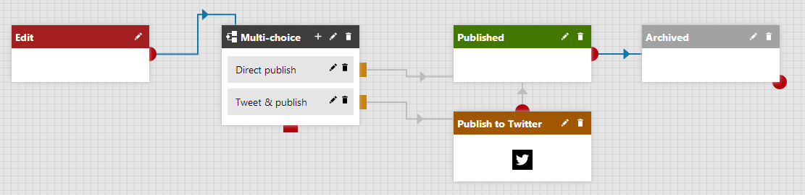
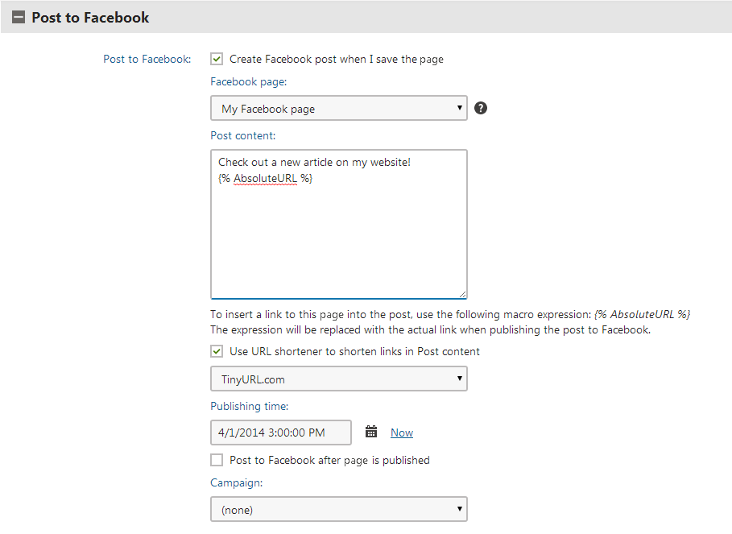

Configuring automatic posting to social media
From Kentico, you can post messages to Facebook and Twitter directly from the Pages application or the on-site editing interface.
You have the following options to publish content from within the editing interface to the supported social media. Each of them is suitable for a different situation.
To post information about a certain section of the content tree, regardless of the page type, choose Publishing to social media using a workflow step.
To post information about pages of one specific page type (e.g., blog post), either manually or automatically at the time of publishing, choose Publishing to social media using form controls.
In both these cases, you post to the chosen social media from within the interface where you edit a page. You can use macros in the post, for example, to insert the URL of the page into the post.
Publishing to social media using a workflow step
You can post messages to social media as part of a page's workflow process using the Publish to Facebook and Publish to Twitter workflow steps. You can use this approach to automatically publish information about pages in a section of your site's content.
If you want to write a message and publish it to social media directly from the page editing interface, consider using the respective form controls.
Connect Kentico to the social media and Add a social media account.
Edit the social media account that you want to publish to.
Enable the Default check box and save the social media account.
The Default check box designates the account as the account that advanced workflow should use. You can have only one default account per one social media.
Create an advanced workflow with the Publish to Facebook or Publish to Twitter step.

Publishing to Twitter using advanced workflowSet the Text of the message that will be automatically posted to Facebook/Twitter in the Workflow step properties. You can use macros in the message.
For example, Check out our new blog post at www.example.com{% GetDocumentURL() %}. The resulting URL could then look like this: www.example.com/blog/my-latest-blog-post.aspx
(Optional) Enable Post only once to avoid multiple posts related to one document.
Providing the property is enabled, the workflow action doesn't create more posts if there is already a post related to the document in the system.
Create a page using this defined workflow.
When advancing over the Publish to Facebook/Publish to Twitter step in the workflow, the predefined message will be automatically posted. The message will appear in Kentico in the Facebook or Twitter application.
Using macros in tweet text
If you use macros in the Text property of the Publish to Twitter text, the remaining character counter reflects the length of the macro string, not the length of the resulting text.
Use the LimitLength macro to ensure the result of other macros doesn't exceed the tweet character limit.
Syntax: String LimitLength (String text, Int32 length)
Example: {% LimitLength(DocumentName, 20) %} - inserts the name of the current page but limits the length to 20 characters.
Publishing to social media using form controls
By adding the Facebook auto post and Twitter auto post form controls to a page type, you can enable editors to post messages to social media from the page editing interface.
You can see an example of the setup in the default Blog post page type, which integrates all supported social media posting controls. However, you still need to perform step 1 of the following procedure.
Connect Kentico to the social media and Add a social media account.
Open the Page types application.
Edit (
 ) the chosen page type.
) the chosen page type.On the Fields tab, click New field.
Set up the following properties:
Field name
Data type: Long text or Text
Field caption
Form control: Facebook auto post or Twitter auto post
Click Save.
When you edit a page of the modified type in the Pages application, a new field appears on the Form tab. The field allows editors to compose a message to be posted on social media.

Posting to Facebook from the Pages application
When the editor saves the page, the system publishes their post on the chosen social media account (Facebook page or Twitter channel). If the editor sets the Publishing time to a future time, the system schedules the publishing of the post to the specified time. Users can view both scheduled and published posts in Kentico in the Facebook or Twitter application.
Editors need permissions for the Social media module to use automatic posting – either Modify or Modify posts.